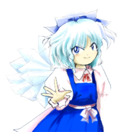
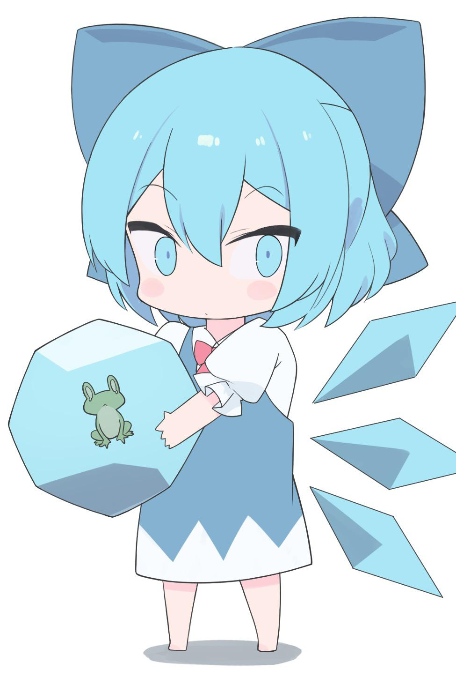
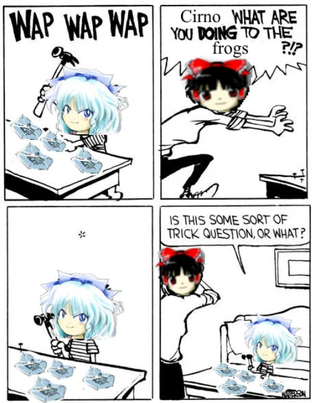
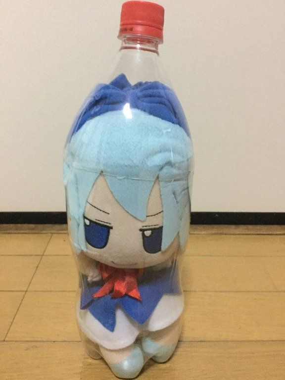
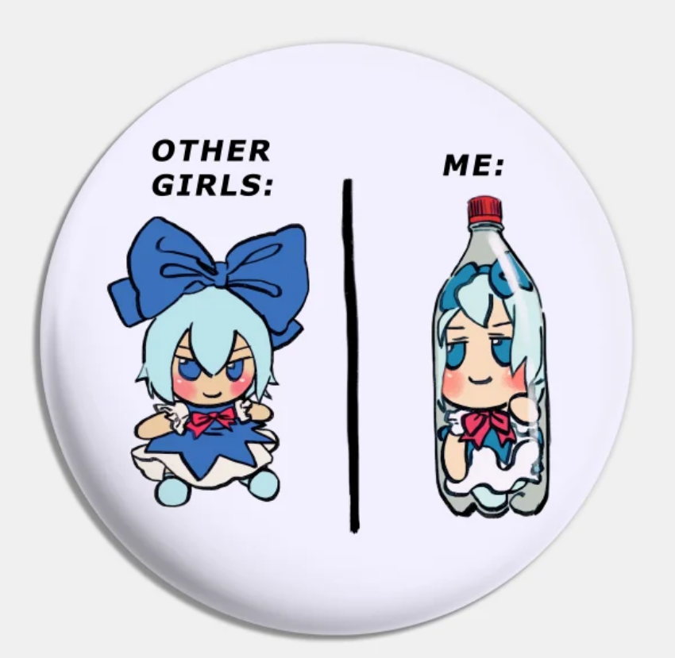
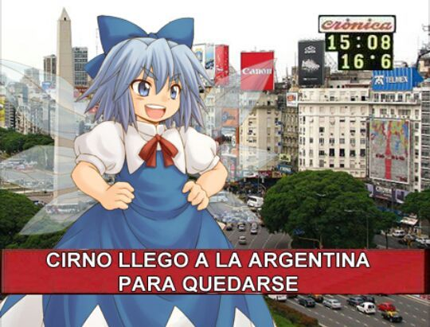
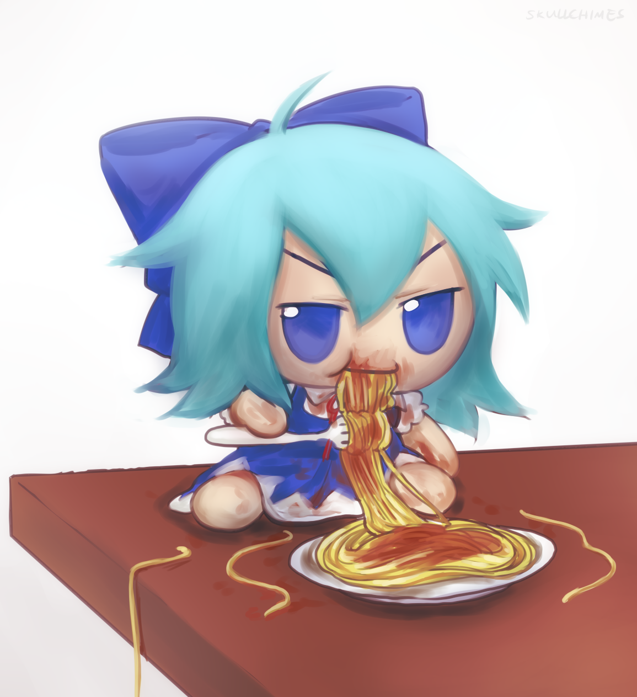

Cirno the strongest
About
Cirno is an ice fairy. While she is described as a weak boss in the Touhou series, her powers are not to be underestimated. Her personality is childish and rather incompetent, as you might expect from her appearance.
Quick Facts
She likes
- Frogs
  - Luxury spaces
   - Fancy cuisine

To learn more about cirno visit here..